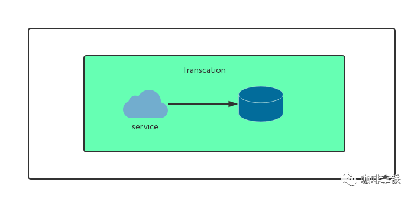
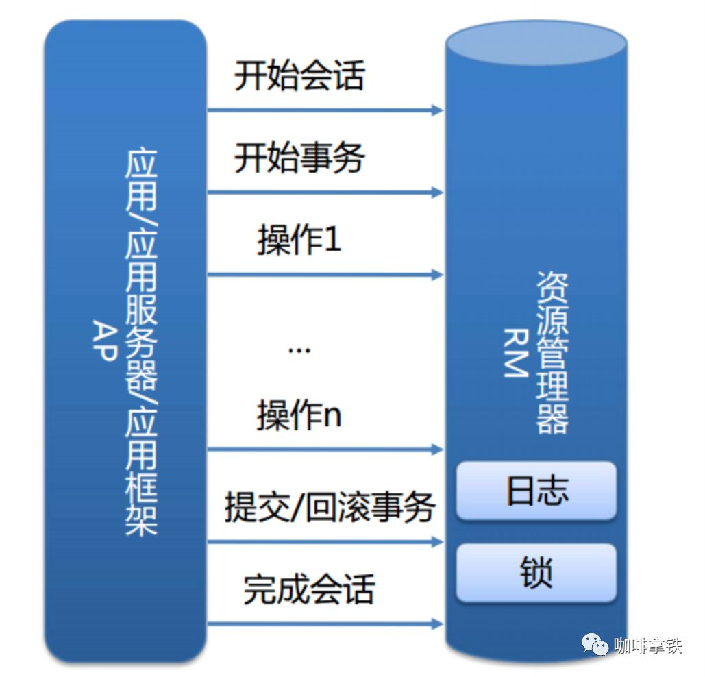

再有人问你分布式事务，把这篇扔给他
前言
不知道你是否遇到过这样的情况，去小卖铺买东西，付了钱，但是店主因为处理了一些其他事，居然忘记你付了钱，又叫你重新付。又或者在网上购物明明已经扣款，但是却告诉我没有发生交易。这一系列情况都是因为没有事务导致的。这说明了事务在生活中的一些重要性。有了事务，你去小卖铺买东西，那就是一手交钱一手交货。有了事务，你去网上购物，扣款即产生订单交易。
事务的具体定义
事务提供一种机制将一个活动涉及的所有操作纳入到一个不可分割的执行单元，组成事务的所有操作只有在所有操作均能正常执行的情况下方能提交，只要其中任一操作执行失败，都将导致整个事务的回滚。简单地说，事务提供一种“要么什么都不做，要么做全套（All or Nothing）”机制。
数据库本地事务
ACID
说到数据库事务就不得不说，数据库事务中的四大特性，ACID:
A:原子性(Atomicity)
一个事务(transaction)中的所有操作，要么全部完成，要么全部不完成，不会结束在中间某个环节。事务在执行过程中发生错误，会被回滚（Rollback）到事务开始前的状态，就像这个事务从来没有执行过一样。
就像你买东西要么交钱收货一起都执行，要么要是发不出货，就退钱。
C:一致性(Consistency)
事务的一致性指的是在一个事务执行之前和执行之后数据库都必须处于一致性状态。如果事务成功地完成，那么系统中所有变化将正确地应用，系统处于有效状态。如果在事务中出现错误，那么系统中的所有变化将自动地回滚，系统返回到原始状态。
I:隔离性(Isolation)
指的是在并发环境中，当不同的事务同时操纵相同的数据时，每个事务都有各自的完整数据空间。由并发事务所做的修改必须与任何其他并发事务所做的修改隔离。事务查看数据更新时，数据所处的状态要么是另一事务修改它之前的状态，要么是另一事务修改它之后的状态，事务不会查看到中间状态的数据。
打个比方，你买东西这个事情，是不影响其他人的。
D:持久性(Durability)
指的是只要事务成功结束，它对数据库所做的更新就必须永久保存下来。即使发生系统崩溃，重新启动数据库系统后，数据库还能恢复到事务成功结束时的状态。
打个比方，你买东西的时候需要记录在账本上，即使老板忘记了那也有据可查。
InnoDB实现原理
InnoDB是mysql的一个存储引擎，大部分人对mysql都比较熟悉，这里简单介绍一下数据库事务实现的一些基本原理，在本地事务中，服务和资源在事务的包裹下可以看做是一体的:
我们的本地事务由资源管理器进行管理: 而事务的ACID是通过InnoDB日志和锁来保证。事务的隔离性是通过数据库锁的机制实现的，持久性通过redo log（重做日志）来实现，原子性和一致性通过Undo log来实现。UndoLog的原理很简单，为了满足事务的原子性，在操作任何数据之前，首先将数据备份到一个地方（这个存储数据备份的地方称为UndoLog）。然后进行数据的修改。如果出现了错误或者用户执行了ROLLBACK语句，系统可以利用Undo Log中的备份将数据恢复到事务开始之前的状态。 和Undo Log相反，RedoLog记录的是新数据的备份。在事务提交前，只要将RedoLog持久化即可，不需要将数据持久化。当系统崩溃时，虽然数据没有持久化，但是RedoLog已经持久化。系统可以根据RedoLog的内容，将所有数据恢复到最新的状态。 对具体实现过程有兴趣的同学可以去自行搜索扩展。
分布式事务
什么是分布式事务
分布式事务就是指事务的参与者、支持事务的服务器、资源服务器以及事务管理器分别位于不同的分布式系统的不同节点之上。简单的说，就是一次大的操作由不同的小操作组成，这些小的操作分布在不同的服务器上，且属于不同的应用，分布式事务需要保证这些小操作要么全部成功，要么全部失败。本质上来说，分布式事务就是为了保证不同数据库的数据一致性。
分布式事务产生的原因
从上面本地事务来看，我们可以看为两块，一个是service产生多个节点，另一个是resource产生多个节点。
service多个节点
随着互联网快速发展，微服务，SOA等服务架构模式正在被大规模的使用，举个简单的例子，一个公司之内，用户的资产可能分为好多个部分，比如余额，积分，优惠券等等。在公司内部有可能积分功能由一个微服务团队维护，优惠券又是另外的团队维护  这样的话就无法保证积分扣减了之后，优惠券能否扣减成功。
这样的话就无法保证积分扣减了之后，优惠券能否扣减成功。
resource多个节点
同样的，互联网发展得太快了，我们的Mysql一般来说装千万级的数据就得进行分库分表，对于一个支付宝的转账业务来说，你给的朋友转钱，有可能你的数据库是在北京，而你的朋友的钱是存在上海，所以我们依然无法保证他们能同时成功。 
分布式事务的基础
从上面来看分布式事务是随着互联网高速发展应运而生的，这是一个必然的我们之前说过数据库的ACID四大特性，已经无法满足我们分布式事务，这个时候又有一些新的大佬提出一些新的理论:
CAP
CAP定理，又被叫作布鲁尔定理。对于设计分布式系统来说(不仅仅是分布式事务)的架构师来说，CAP就是你的入门理论。
C (一致性):对某个指定的客户端来说，读操作能返回最新的写操作。对于数据分布在不同节点上的数据上来说，如果在某个节点更新了数据，那么在其他节点如果都能读取到这个最新的数据，那么就称为强一致，如果有某个节点没有读取到，那就是分布式不一致。
A (可用性)：非故障的节点在合理的时间内返回合理的响应(不是错误和超时的响应)。可用性的两个关键一个是合理的时间，一个是合理的响应。合理的时间指的是请求不能无限被阻塞，应该在合理的时间给出返回。合理的响应指的是系统应该明确返回结果并且结果是正确的，这里的正确指的是比如应该返回50，而不是返回40。
P (分区容错性):当出现网络分区后，系统能够继续工作。打个比方，这里个集群有多台机器，有台机器网络出现了问题，但是这个集群仍然可以正常工作。
熟悉CAP的人都知道，三者不能共有，如果感兴趣可以搜索CAP的证明，在分布式系统中，网络无法100%可靠，分区其实是一个必然现象，如果我们选择了CA而放弃了P，那么当发生分区现象时，为了保证一致性，这个时候必须拒绝请求，但是A又不允许，所以分布式系统理论上不可能选择CA架构，只能选择CP或者AP架构。
对于CP来说，放弃可用性，追求一致性和分区容错性，我们的zookeeper其实就是追求的强一致。
对于AP来说，放弃一致性(这里说的一致性是强一致性)，追求分区容错性和可用性，这是很多分布式系统设计时的选择，后面的BASE也是根据AP来扩展。
顺便一提，CAP理论中是忽略网络延迟，也就是当事务提交时，从节点A复制到节点B，但是在现实中这个是明显不可能的，所以总会有一定的时间是不一致。同时CAP中选择两个，比如你选择了CP，并不是叫你放弃A。因为P出现的概率实在是太小了，大部分的时间你仍然需要保证CA。就算分区出现了你也要为后来的A做准备，比如通过一些日志的手段，是其他机器回复至可用。
BASE
BASE 是 Basically Available(基本可用)、Soft state(软状态)和 Eventually consistent (最终一致性)三个短语的缩写。是对CAP中AP的一个扩展
基本可用:分布式系统在出现故障时，允许损失部分可用功能，保证核心功能可用。
软状态:允许系统中存在中间状态，这个状态不影响系统可用性，这里指的是CAP中的不一致。
最终一致:最终一致是指经过一段时间后，所有节点数据都将会达到一致。
BASE解决了CAP中理论没有网络延迟，在BASE中用软状态和最终一致，保证了延迟后的一致性。BASE和 ACID 是相反的，它完全不同于ACID的强一致性模型，而是通过牺牲强一致性来获得可用性，并允许数据在一段时间内是不一致的，但最终达到一致状态。
分布式事务解决方案
有了上面的理论基础后，这里介绍开始介绍几种常见的分布式事务的解决方案。
是否真的要分布式事务
在说方案之前，首先你一定要明确你是否真的需要分布式事务？
上面说过出现分布式事务的两个原因，其中有个原因是因为微服务过多。我见过太多团队一个人维护几个微服务，太多团队过度设计，搞得所有人疲劳不堪，而微服务过多就会引出分布式事务，这个时候我不会建议你去采用下面任何一种方案，而是请把需要事务的微服务聚合成一个单机服务，使用数据库的本地事务。因为不论任何一种方案都会增加你系统的复杂度，这样的成本实在是太高了，千万不要因为追求某些设计，而引入不必要的成本和复杂度。
如果你确定需要引入分布式事务可以看看下面几种常见的方案。
2PC
说到2PC就不得不聊数据库分布式事务中的 XA Transactions。  在XA协议中分为两阶段:
在XA协议中分为两阶段:
第一阶段：事务管理器要求每个涉及到事务的数据库预提交(precommit)此操作，并反映是否可以提交.
第二阶段：事务协调器要求每个数据库提交数据，或者回滚数据。
优点： 尽量保证了数据的强一致，实现成本较低，在各大主流数据库都有自己实现，对于MySQL是从5.5开始支持。
缺点:
单点问题:事务管理器在整个流程中扮演的角色很关键，如果其宕机，比如在第一阶段已经完成，在第二阶段正准备提交的时候事务管理器宕机，资源管理器就会一直阻塞，导致数据库无法使用。
同步阻塞:在准备就绪之后，资源管理器中的资源一直处于阻塞，直到提交完成，释放资源。
数据不一致:两阶段提交协议虽然为分布式数据强一致性所设计，但仍然存在数据不一致性的可能，比如在第二阶段中，假设协调者发出了事务commit的通知，但是因为网络问题该通知仅被一部分参与者所收到并执行了commit操作，其余的参与者则因为没有收到通知一直处于阻塞状态，这时候就产生了数据的不一致性。
总的来说，XA协议比较简单，成本较低，但是其单点问题，以及不能支持高并发(由于同步阻塞)依然是其最大的弱点。
TCC
关于TCC（Try-Confirm-Cancel）的概念，最早是由Pat Helland于2007年发表的一篇名为《Life beyond Distributed Transactions:an Apostate’s Opinion》的论文提出。 TCC事务机制相比于上面介绍的XA，解决了其几个缺点: 1.解决了协调者单点，由主业务方发起并完成这个业务活动。业务活动管理器也变成多点，引入集群。 2.同步阻塞:引入超时，超时后进行补偿，并且不会锁定整个资源，将资源转换为业务逻辑形式，粒度变小。 3.数据一致性，有了补偿机制之后，由业务活动管理器控制一致性  对于TCC的解释:
对于TCC的解释:
Try阶段：尝试执行,完成所有业务检查（一致性）,预留必须业务资源（准隔离性）
Confirm阶段：确认执行真正执行业务，不作任何业务检查，只使用Try阶段预留的业务资源，Confirm操作满足幂等性。要求具备幂等设计，Confirm失败后需要进行重试。
Cancel阶段：取消执行，释放Try阶段预留的业务资源 Cancel操作满足幂等性Cancel阶段的异常和Confirm阶段异常处理方案基本上一致。
举个简单的例子如果你用100元买了一瓶水， Try阶段:你需要向你的钱包检查是否够100元并锁住这100元，水也是一样的。
如果有一个失败，则进行cancel(释放这100元和这一瓶水)，如果cancel失败不论什么失败都进行重试cancel，所以需要保持幂等。
如果都成功，则进行confirm,确认这100元扣，和这一瓶水被卖，如果confirm失败无论什么失败则重试(会依靠活动日志进行重试)
对于TCC来说适合一些:
强隔离性，严格一致性要求的活动业务。
执行时间较短的业务
实现参考:ByteTCC:https://github.com/liuyangming/ByteTCC/
本地消息表
本地消息表这个方案最初是ebay提出的 ebay的完整方案https://queue.acm.org/detail.cfm?id=1394128。
此方案的核心是将需要分布式处理的任务通过消息日志的方式来异步执行。消息日志可以存储到本地文本、数据库或消息队列，再通过业务规则自动或人工发起重试。人工重试更多的是应用于支付场景，通过对账系统对事后问题的处理。 
对于本地消息队列来说核心是把大事务转变为小事务。还是举上面用100元去买一瓶水的例子。
1.当你扣钱的时候，你需要在你扣钱的服务器上新增加一个本地消息表，你需要把你扣钱和写入减去水的库存到本地消息表放入同一个事务(依靠数据库本地事务保证一致性。
2.这个时候有个定时任务去轮询这个本地事务表，把没有发送的消息，扔给商品库存服务器，叫他减去水的库存，到达商品服务器之后这个时候得先写入这个服务器的事务表，然后进行扣减，扣减成功后，更新事务表中的状态。
3.商品服务器通过定时任务扫描消息表或者直接通知扣钱服务器，扣钱服务器本地消息表进行状态更新。
4.针对一些异常情况，定时扫描未成功处理的消息，进行重新发送，在商品服务器接到消息之后，首先判断是否是重复的，如果已经接收，在判断是否执行，如果执行在马上又进行通知事务，如果未执行，需要重新执行需要由业务保证幂等，也就是不会多扣一瓶水。
本地消息队列是BASE理论，是最终一致模型，适用于对一致性要求不高的。实现这个模型时需要注意重试的幂等。
MQ事务
在RocketMQ中实现了分布式事务，实际上其实是对本地消息表的一个封装，将本地消息表移动到了MQ内部，下面简单介绍一下MQ事务，如果想对其详细了解可以参考: https://www.jianshu.com/p/453c6e7ff81c。  基本流程如下: 第一阶段Prepared消息，会拿到消息的地址。
基本流程如下: 第一阶段Prepared消息，会拿到消息的地址。
第二阶段执行本地事务。
第三阶段通过第一阶段拿到的地址去访问消息，并修改状态。消息接受者就能使用这个消息。
如果确认消息失败，在RocketMq Broker中提供了定时扫描没有更新状态的消息，如果有消息没有得到确认，会向消息发送者发送消息，来判断是否提交，在rocketmq中是以listener的形式给发送者，用来处理。  如果消费超时，则需要一直重试，消息接收端需要保证幂等。如果消息消费失败，这个就需要人工进行处理，因为这个概率较低，如果为了这种小概率时间而设计这个复杂的流程反而得不偿失
如果消费超时，则需要一直重试，消息接收端需要保证幂等。如果消息消费失败，这个就需要人工进行处理，因为这个概率较低，如果为了这种小概率时间而设计这个复杂的流程反而得不偿失
Saga事务
Saga是30年前一篇数据库伦理提到的一个概念。其核心思想是将长事务拆分为多个本地短事务，由Saga事务协调器协调，如果正常结束那就正常完成，如果某个步骤失败，则根据相反顺序一次调用补偿操作。 Saga的组成：
每个Saga由一系列sub-transaction Ti 组成 每个Ti 都有对应的补偿动作Ci，补偿动作用于撤销Ti造成的结果,这里的每个T，都是一个本地事务。 可以看到，和TCC相比，Saga没有“预留 try”动作，它的Ti就是直接提交到库。
Saga的执行顺序有两种：
T1, T2, T3, ..., Tn
T1, T2, ..., Tj, Cj,..., C2, C1，其中0 < j < n Saga定义了两种恢复策略：
向后恢复，即上面提到的第二种执行顺序，其中j是发生错误的sub-transaction，这种做法的效果是撤销掉之前所有成功的sub-transation，使得整个Saga的执行结果撤销。 向前恢复，适用于必须要成功的场景，执行顺序是类似于这样的：T1, T2, ..., Tj(失败), Tj(重试),..., Tn，其中j是发生错误的sub-transaction。该情况下不需要Ci。
这里要注意的是，在saga模式中不能保证隔离性，因为没有锁住资源，其他事务依然可以覆盖或者影响当前事务。
还是拿100元买一瓶水的例子来说，这里定义
T1=扣100元 T2=给用户加一瓶水 T3=减库存一瓶水
C1=加100元 C2=给用户减一瓶水 C3=给库存加一瓶水
我们一次进行T1,T2，T3如果发生问题，就执行发生问题的C操作的反向。 上面说到的隔离性的问题会出现在，如果执行到T3这个时候需要执行回滚，但是这个用户已经把水喝了(另外一个事务)，回滚的时候就会发现，无法给用户减一瓶水了。这就是事务之间没有隔离性的问题
可以看见saga模式没有隔离性的影响还是较大，可以参照华为的解决方案:从业务层面入手加入一 Session 以及锁的机制来保证能够串行化操作资源。也可以在业务层面通过预先冻结资金的方式隔离这部分资源， 最后在业务操作的过程中可以通过及时读取当前状态的方式获取到最新的更新。
具体实例:可以参考华为的servicecomb
最后
还是那句话，能不用分布式事务就不用，如果非得使用的话，结合自己的业务分析，看看自己的业务比较适合哪一种，是在乎强一致，还是最终一致即可。最后在总结一些问题,大家可以下来自己从文章找寻答案:
ACID和CAP的 CA是一样的吗？
分布式事务常用的解决方案的优缺点是什么？适用于什么场景？
分布式事务出现的原因？用来解决什么痛点？
如果上面问题有什么疑问的话可以关注公众号，来和我一起讨论吧。
END

文章转载自公众号